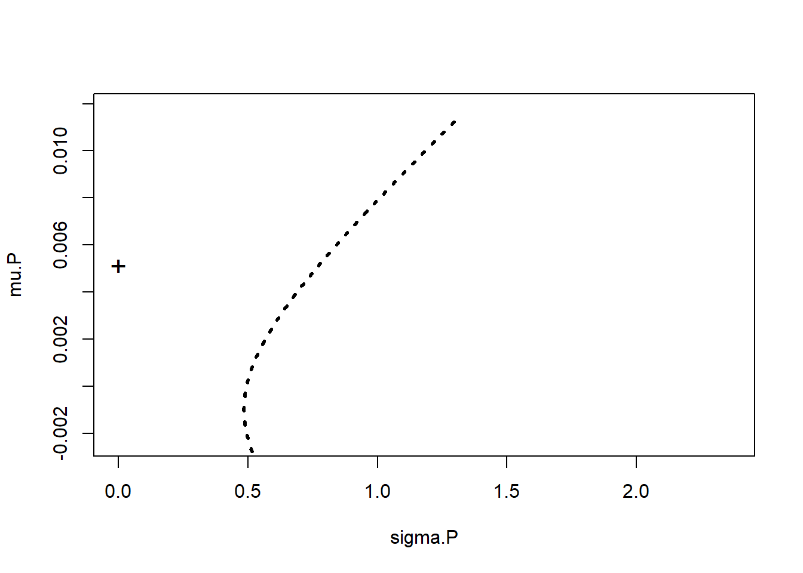
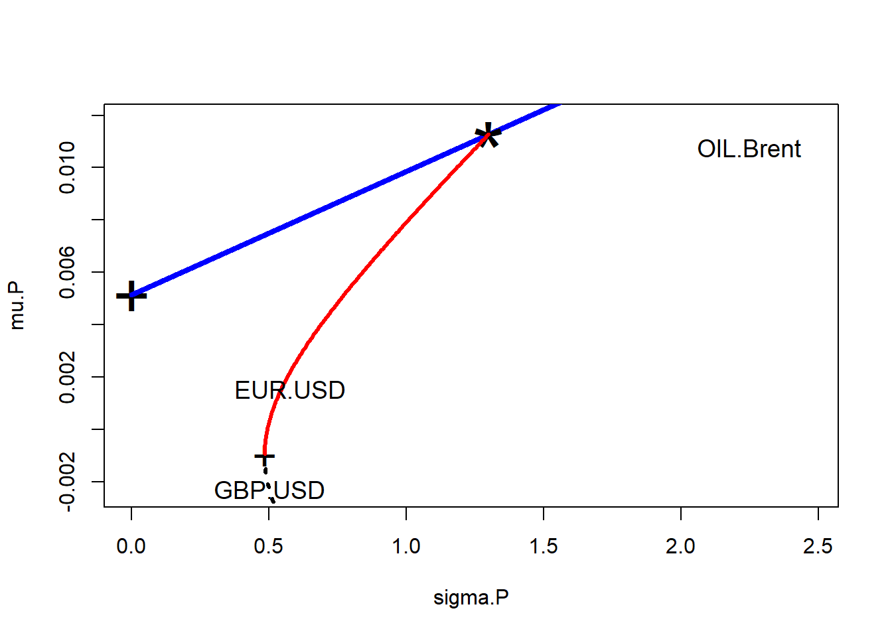
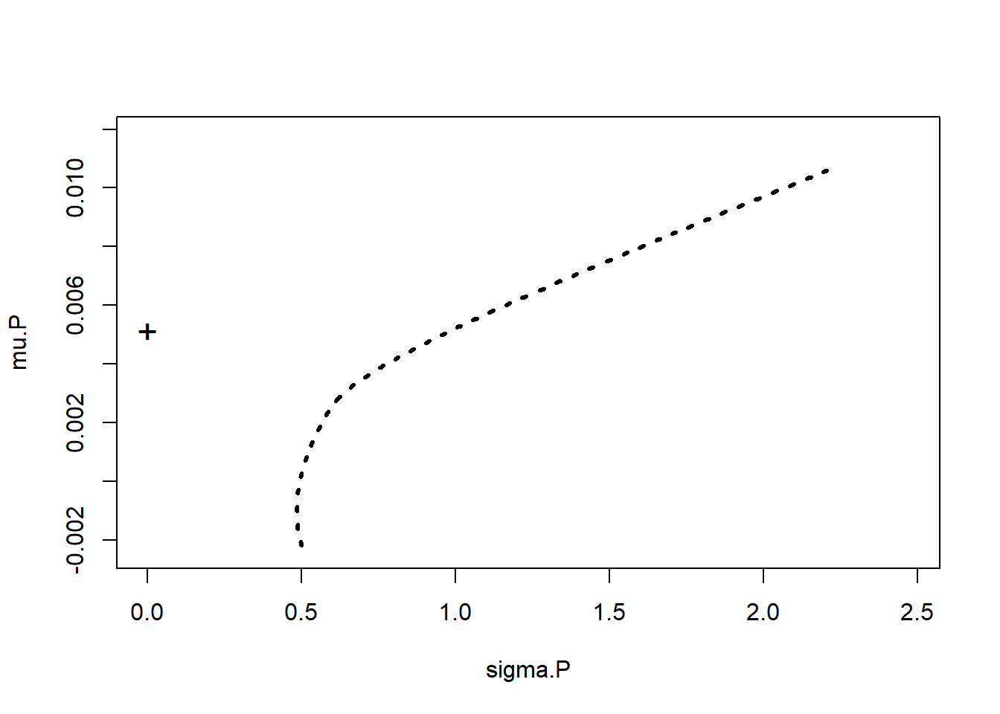
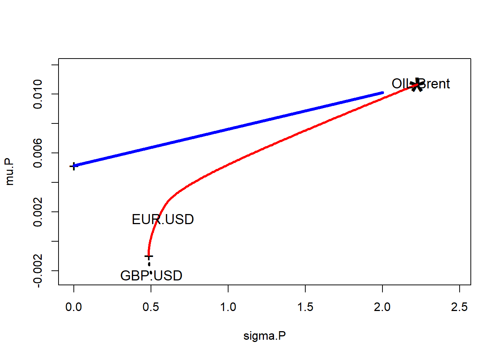

Chapter 6 Portfolio Analytics
The first stage starts with observation and experience and ends with beliefs about the future performances of available securities. The second stage starts with the relevant beliefs about future performances and ends with the choice of portfolio. Harry Markowitz
6.1 Imagine This
- You are trying to negotiate a new energy contract across 10 different facilities and 20 gas and oil suppliers.
- Your colleague is managing accounts receivable across 38 different currencies in spot and forward markets.
- Another colleague manages collateral for workers’ compensation funding in all 50 states.
- Yet another colleague manages 5 fund managers for a health insurer.
Portfolios are everywhere! We can conceive of every margin as a long position in revenue and a short position in costs. In all case of interest at least some notion of the the mean (central tendency) and standard deviation (scale and diffusion) of a portfolio metric (e.g., return) will be traded off. Operational and financial constraints will narrow the possible choices to achieve performance (mean = “mu” = \(\mu\)) and risk (standard deviation = “sigma” = \(\sigma\)) goals.
6.1.1 Our “working example”
This will we Working Capital which is Receivables + Inventory - Payables. The CFO needs answers around why it is so big and always seems to bulge when the economic fortunes of our customers are in peril of deteriorating. She knows that there are three culprits: the euro rate, the Sterling rate, and Brent crude. She commissions you and your team to figure out the ultimate combination of these factors that contributes to a $100 million working capital position with a volatility of over $25 million this past year.
6.1.2 This chapter
The goal of this chapter is to introduce portfolio analytics and incorporate our knowledge of statistics, optimization, and financial objects into the analysis.
6.2 Let’s Walk Before We Run
Suppose management wants to achieve a targeted value at risk on new contracts. The value at risk (VaR) is the \(\alpha\) quantile of portfolio value where \(\alpha\) (“alpha”) is the organization’s tolerance for risk. While VaR is the maximum amount of tolerable loss more loss is possible.
Now suppose Management is considering a $1 billion contract with two Iberian companies and one United Kingdom-based (UK) company working in Spain. The deal is constrained by having $100 million in reserves are available to cover any losses. The Board wants some comfort that no more than a 10 % age loss (the average “return” \(\mu\)) would occur. The Board has set the organization’s tolerance for risk at 5%. This means in this case a maximum of 5% of the time could losses exceed 10%. To keep things simple at first we assume that losses are normally distributed.
Let’s perform a “back of the envelope” analysis. We let \(R\) stand for returns, so that \(-R\) is a loss. Our management team wants
\[ Prob(R < -0.10) = 0.05, \]
that is, the probability of a loss worse than 10 % is no more than 5 %.
Let’s now do some algebra and first let \(w\) be the “weight” invested in the risky contract. The rest of the proportion of the contract, \(1-w\), is in high quality collateral assets like treasury bonds. The weight \(w\) can take on values from 0% (0.0) to 100% (1.0).
- No collateral means \(w = 1\)
- No contract means \(w = 0\).
The average return, \(\mu\), on the contract is
\[ \mu = w(0.1) + (1-w)(0.02). \]
This is the weighted average return of the contract at 10% and collateral at 2%.
The average level of risk in this model is given by the standard deviation of this combination of risky contract and default-free collateral.
Management currently believes that a 25% standard deviation of return on the contract, “sigma” or \(\sigma\), is reasonable. Collateral is not “risky” in this scenario and thus its standard deviation is zero (and by definition is not correlated with the contract return).
\[ \sigma = w^2 (0.25)^2 + (1-w)^2 (0.0). \]
We now try to figure out what \(w\) is. More precisely, we solve for the percentage of total assets as investment in this contract, that will make losses happen no greater than 5% of the time.
We form a normalizing “z-score” to help us. We shift the largest possible loss to average return to a deviation around the 10% loss, then divide by \(\sigma\) to scale losses to the number of standard deviations around the maximum tolerable loss.
\[ z = \frac{-0.1 - \mu}{\sigma}. \]
The \(z\) the ratio of potential deviation of loss from the mean maximum loss per unit of risk. It is dimensionless and represents the number of standard deviations of loss around the maximum tolerable loss. Our job is to find \(w\) such that the \(z\) score under the normal distribution cannot exceed 5%.
\[ Prob(R < -0.10) = Normal(z(w)) = 0.05, \]
where \(Normal\) is the cumulative normal distribution (you might know this as =Norm.S.Dist() in Excel or qnorm() in R), with mean of zero and standard deviation of one.
Using our models of \(\mu\) and \(\sigma\) we get
\[ z = \frac{-0.1 - 0.1 w - 0.02 (1-w)}{0.25 w} \]
After combining constant terms and terms in \(w\) and putting this into the target probability:
\[ z = Normal \left[ \frac{-0.12 - 0.12 w}{0.25 w} \right] = 0.05. \]
Finally, we solve for \(w\) in a few more steps.
- We invert the normal distribution on both sides of the equation. On the left hand side we are left with the \(z\) score as a function of \(w\), the percentage of all wealth in the risk contract.
\[
Inverse \, Normal \left[ Normal \left( \frac{-0.12 - 0.12 w}{0.25 w} \right) \right] = Inverse \, Normal (0.05)
\]
We can calculate \(Inverse \, Normal(0.05)\) using
R
## [1] -1.645or in Excel with =NORM.S.INV(0.05). Each of these takes as input the probability under the normal distribution and calculates the \(z\) score associated with the probability.
- We find that
qnorm(0.05)is 1.64. Loss cannot exceed 1.64 times the portfolio standard deviation in the direction of loss (“negative” or less than the mean) using a one-tail interval. We justify a one-tail interval since we, and the Board, are only interested in loss. Inserting this value we get
\[ \left( \frac{-0.12 - 0.12 w}{0.25 w} \right) = NormalInverse (0.05) = -1.64 \]
Multiplying each side by \(0.25 w\), combining terms in \(w\) and dividing by the coefficient of that last combined \(w\) we get
\[ w = \frac{-0.12}{0.25(-1.64) + 0.12} = 0.42. \]
In R:
## [1] 0.4138Implications?
- 42% of portfolio value = risky contract value.
- Portfolio value = $1 billion / 0.42 = $2.38 billion.
- Collateral value = $2.38 billion - $1 billion = $1.38 billion or 68% of portfolio value.
We just found the notorious “tangency” portfolio. This portfolio, when combined with a risk-free (really “default-free” asset), will yield the best mix of risky and risk-free assets. “Best” here is in the sense of not violating the organization’s risk tolerance policy.
A way to find the tangency portfolio in any situation is then to
- Find the optimal combination of risky assets, the tangency portfolio.
- Then find the optimal mix of tangency assets and the risk-free asset.
In our example working capital’s “risk-free” asset is the cash account and the process of getting there is the cash-conversion cycle.
6.3 All In
Now that we have our basic procedure, let’s complicate this problem with many risky assets. The basic solution will be choosing weights to minimize the portfolio risk given risk-adjusted return targets. This is the Markowitz (1952) portfolio solution. For this task we need to define a matrix version of the portfolio allocation problem. Our three risky “assets” will be the euro/USD and GBP/USD exchange rates and Brent crude.
This is all about the normally distributed universe. Let’s define more precisely
First, the return matrix \(R\) for \(N\) assets across \(T\) sample periods and the subscript indicates the row (observation) and column (asset):
\[ \left[ \begin{array}{ccc} R_{11} & ... & R_{1N} \\ ... & ... & ... \\ R_{1T} & ... & R_{TN} \end{array} \right] \]
Then, the mean return vector \(\mu\) is the arithmetic average of each column of \(R\)
\[ \left[ \begin{array}{c} \mu_1 \\ ... \\ \mu_N \end{array} \right], \]
after exchanging rows for columns (transpose).
6.3.1 Try this exercise
First let’s be sure the qrmdata package is installed. We require this package and the daily data in it. Then we will look up the apply function to see how we can compute row averages.
require(qrmdata)
require(xts)
## The exchange rate data was obtained from OANDA (http://www.oanda.com/) on 2016-01-03
data("EUR_USD")
data("GBP_USD")
## The Brent data was obtained from Federal Reserve Economic Data (FRED) via Quandl on 2016-01-03
data("OIL_Brent")
data.1 <- na.omit(merge(EUR_USD, GBP_USD, OIL_Brent))
R <- na.omit(diff(log(data.1))*100)
names.R <- c("EUR.USD", "GBP.USD", "OIL.Brent")
colnames(R) <- names.RFirst we compute the mean return.
## EUR.USD GBP.USD OIL.Brent
## 0.001539 -0.002283 0.010774Now some questions for us to consider:
- Let’s look at a
summaryof a few columns. Is there anything odd or curious? - What does the
2indicate in theapplyfunction. - What is Brent crude’s annualized mean “return”?
Some immediate results ensue.
## Index EUR.USD GBP.USD OIL.Brent
## Min. :2000-01-05 Min. :-2.523 Min. :-4.648 Min. :-19.891
## 1st Qu.:2003-12-18 1st Qu.:-0.308 1st Qu.:-0.278 1st Qu.: -1.153
## Median :2007-12-05 Median : 0.014 Median : 0.006 Median : 0.036
## Mean :2007-12-19 Mean : 0.002 Mean :-0.002 Mean : 0.011
## 3rd Qu.:2011-12-19 3rd Qu.: 0.322 3rd Qu.: 0.287 3rd Qu.: 1.249
## Max. :2015-12-28 Max. : 3.464 Max. : 3.141 Max. : 18.130Means are much less than medians. There are juge maximum and minimum returns. We can also look at acf and ccf, absolute returns, run GARCH models, and so on to hone our exploratory analysis.
We ook up ??apply and read that the 2 indicates that we are calculating the mean for the second dimension of the data matrix, namely, the assets.
Brent crude’s annualized mean return is calculated on a 252 average days traded in a year basis as:
## OIL.Brent
## 0.02752Some folks use 253 days. But this is all a back of the envelope computation.
6.3.2 Let’s keep moving on…
So, what is the context? We have working capital with three main drivers of risk and return: two exchange rates and a commodity price. Over time we will want to know how these factors act and interact to produce EBITDA returns on Assets. Here EBITDA is Earnings Before Interest and Tax adding back in non-cash Depreciation and Amortization.
Then, how does that combination compare with today’s reality and especially answer the CFO’s question of what to do about the millstone of working capital around the neck of EBITDA?
Given this context, and the data we found earlier on, we then calculate the variance-covariance matrix. The diagonals of this matrix are the variances, so that the square root of the diagonal will yield standard deviations. The off-diagonals can be converted to correlations as needed.
## EUR.USD GBP.USD OIL.Brent
## 0.001539 -0.002283 0.010774## EUR.USD GBP.USD OIL.Brent
## EUR.USD 0.3341 0.1939 0.1631
## GBP.USD 0.1939 0.2539 0.1809
## OIL.Brent 0.1631 0.1809 5.0572## EUR.USD GBP.USD OIL.Brent
## 0.5780 0.5039 2.2488Now for some programming (quadratic that is…) but first let’s get more mathematical about the statement of the problem we are about to solve. In a mathematical nutshell we are formally (more tractable version to follow…) solving the problem of minimizing working capital factors risk, subject to target returns and a budget that says it all has to add up to our working capital position. We define weights as percentages of the total working capital position. Thus the weights need to add up to one.
\[ \begin{array}{c} min_w w_T \Sigma w \\ subject \, to \\ 1^T w = 1\\ w^T \mu = \mu_0 \end{array} \]
where
- \(w\) are the weights in each instrument.
- \(\Sigma\) is the variance-covariance matrix we just estimated,
cov.R. - \(1\) is a vector of ones’s with length equal to the number of instruments.
- \(\mu\) are the mean returns we just estimated,
mean.R. - \(\mu_0\) is the target portfolio return.
- \(T\) is the matrix transpose.
- \(min_w\) means to find weights \(w\) that minimizes portfolio risk.
The expression \(w_T \Sigma w\) is our measure of portfolio risk and is a quadratic form that looks like this for two instruments:
\[ \left[ \begin{array}{cc} w_1 & w_2 \end{array} \right] \left[ \begin{array}{cc} \sigma_1^2 & \sigma_{12} \\ \sigma_{21} & \sigma_2^2 \end{array} \right] \left[ \begin{array}{c} w_1 \\ w_2 \end{array} \right] \]
Multiplied out we get the following quadratic formula for portfolio variance:
\[ \sigma_P^2 = w_1^2 \sigma_1^2 + w_2^2 \sigma_2^2 + w_1 w_2 \sigma_{12} + w_2 w_1 \sigma_{21} \]
and because \(\sigma_{12} = \sigma_{21}\) this reduces a bit to
\[ \sigma_P^2 = w_1^2 \sigma_1^2 + w_2^2 \sigma_2^2 + 2 w_1 w_2 \sigma_{12} \]
Tedious? Definitely. But useful to explain the components of portfolio risk
- Two dashes of own asset risk \(w_1^2 \sigma_1^2 + w_2^2 \sigma_2^2\), and
- Two dashes of relational risk \(2 w_1 w_2 \sigma_{12}\)
When \(\sigma_{12} < 1\) we have diversification.
6.3.3 Try this exercise
Suppose we have two commodities (New York Harbor No. 2 Oil and Henry Hub Natural Gas) feeding a production process (Electricity Generation).These are the weights in this process:
\[
w = \{ w_{oil} = -.5, w_{ng} = -.5, w_{ele} = 1.0 \}
\]
The percentage changes in terms of the prices of these commodities are given by:
\[
\mu = \{ \mu_{oil} = 0.12, \mu_{ng} = -0.09, \mu_{ele} = 0.15 \}.
\]
Standard deviations are
\[
\sigma = \{ \sigma_{oil} = 0.20, \sigma_{ng} = 0.15, \sigma_{ele} = 0.40 \}
\]
The correlation matrix is
\[
\rho =
\left[ \begin{array}{ccc}
1.0 & 0.2 & 0.6 \\
0.2 & 1.0 & 0.4 \\
0.6 & 0.4 & 1.0
\end{array} \right]
\]
Using the formula
\[
\Sigma = (\sigma \sigma^T) \rho
\]
we can calculate the variance-covariance matrix \(\Sigma\) using our R knowledge of arrays. [Hint: t() is the transpose of an array so that \(\sigma^T\) is t(sigma).] We can also calculate the portfolio mean return and portfolio standard deviation.
Let’s Use this R code to put all of this into action.
sigma <- c(0.20, 0.15, 0.40)
rho = c(1.0 , 0.2 , 0.6,
0.2 , 1.0 , 0.4,
0.6 , 0.4 , 1.0 )
(rho <- matrix(rho, nrow = 3, ncol = 3))## [,1] [,2] [,3]
## [1,] 1.0 0.2 0.6
## [2,] 0.2 1.0 0.4
## [3,] 0.6 0.4 1.0## [,1] [,2] [,3]
## [1,] 0.040 0.0060 0.048
## [2,] 0.006 0.0225 0.024
## [3,] 0.048 0.0240 0.160The diagonals are the squared standard deviations. Next we tackle the portfolio average rate.
## [,1]
## [1,] 0.135Now we compute the portfolio average level of “risk”.
## [,1]
## [1,] 0.3265What does all of this mean?
- Running a power-generating plant (or refinery, or distribution chain, …) over time financially really means generating a spark spread: the margin between costs of inputs natural gas and oil (the negative or short position) and revenue from the output
- The average spark spread rate of return for this plant is 10.67%. The spark spread is the difference between the price of electricity and the price of input fuels on a MWh basis (megawatt-hour).
- The standard deviation of the spark spread is 32.65%.
Our next job is to use these mechanics about portfolio means, standard deviations, and correlations to find the best set of weights that minimizes portfolio risk while attempting to achieve a target level of return.
6.4 Optimizing a Portfolio
To perform the optimization task we turn to the quadprog quadratic programming package (yes, parabolas are indeed very useful). We worked out a two-asset example that showed us clearly that the objective function has squared terms (and interactive product terms too). These are the tell-tale signs that mark the portfolio variance as quadratic. It is all in the weights.
After all of our wrangling above it is useful to define our portfolio optimization problem again here:
\[
\begin{array}{c}
min_{(w)} w_T \Sigma w \\
subject \, to \\
1^T w = 1\\
w^T \mu = \mu_0
\end{array}
\]
On the other hand here is what quadprog does in its native format.
\[
\begin{array}{c}
min_d -d^T x +\frac{1}{2} x^T D x \\
subject \, to \\
A_{neq}^T x \geq b_{neq} \\
A_{eq}^T x = b_{eq}
\end{array}
\]
Now we need to transform these equations into portfolio paramters to solve our portfolio problem. We do this by setting
\[
A_{eq}^T = \left[
\begin{array}{c}
1^T \\
\mu^T
\end{array}
\right]
\]
This gives us a stack of equality constraints that looks like:
\[
\left[ \begin{array}{c}
1^T w \\
\mu^T w
\end{array}
\right]
=
\left[ \begin{array}{c}
1 \\
\mu_0
\end{array}
\right]
\]
We will allow short positions, like the spark spread experiment above. This means we will not yet impose inequality constraints like \(w \geq 0\).
Here is the setup code
library(quadprog)
Amat <- cbind(rep(1,3),mean.R) ## set the equality constraints matrix
mu.P <- seq(min(mean.R - 0.0005), max(mean.R + 0.0005), length=300) ## set of 300 possible target portfolio returns
sigma.P <- mu.P ## set up storage for std dev's of portfolio returns
weights <- matrix(0, nrow=300, ncol = ncol(R)) ## storage for portfolio weights
colnames(weights) <- names.RNext we build the “efficient frontier.” This curve (a parabola…) traces optimal combinations of risk and return. For each combination there is an underlying set of weights calculated in successive optimizations, one for each target \(\mu\). In effect this is a very specialized sensitivity analysis.
for (i in 1:length(mu.P))
{
bvec = c(1,mu.P[i]) ## constraint vector
result =
solve.QP(Dmat=2*cov.R,dvec=rep(0,3),Amat=Amat,bvec=bvec,meq=2)
sigma.P[i] = sqrt(result$value)
weights[i,] = result$solution
}First, we plot all of the portfolio combinations.
par(mfrow = c(1,1))
plot(sigma.P, mu.P, type="l", xlim=c(0,max(sd.R)*1.1), ylim=c(0,max(mean.R)*1.1), lty=3, lwd = 3) ## plot
## the efficient frontier (and inefficient portfolios
## below the min var portfolio)
mu.free = 1.3/253 ## input value of risk-free interest rate
points(0,mu.free,cex=1,pch="+") ## show risk-free assetThen we plot the point on the graph that represents the so-called risk-free (actually more like default-free) asset.  Finally we deploy William Sharpe’s ratio.
- This number is the amount of portfolio premium per unit of risk (the “price” of risk) across all combinations of portfolio assets on the efficient frontier. Its maximum is the best combination for the risk in terms of returns.
- We figure out where (the index
ind) the return to risk is along the frontier, record the weights associated with this unique point in risk-return space, and - We find where (the index
ind2) the minimum variance portfolio is. - We then plot the “efficient frontier”: the efficient frontier will extend from the minimum variance portfolio (a “+” will mark the spot) up and out (in red). Anything else below this line is “inefficient” in the sense you get less and less return for mo
Here is the code we just built up.
sharpe =( mu.P-mu.free)/sigma.P ## compute Sharpe's ratios
ind = (sharpe == max(sharpe)) ## Find maximum Sharpe's ratio
options(digits=3)
lines(c(0,2),mu.free+c(0,2)*(mu.P[ind]-mu.free)/sigma.P[ind],lwd=4,lty=1, col = "blue")
## show line of optimal portfolios
points(sigma.P[ind],mu.P[ind],cex=4,pch="*") ## show tangency portfolio
ind2 = (sigma.P == min(sigma.P)) ## find the minimum variance portfolio
points(sigma.P[ind2],mu.P[ind2],cex=2,pch="+") ## show min var portfolio
ind3 = (mu.P > mu.P[ind2]) ## finally the efficient frontier
lines(sigma.P[ind3],mu.P[ind3],type="l", xlim=c(0,max(sd.R)*1.1), ylim=c(min(mean.R)*1.05, max(mean.R)*1.1) ,lwd=3, col = "red") ## plot the efficient frontier
text(sd.R[1],mean.R[1],"EUR.USD",cex=1.15)
text(sd.R[2],mean.R[2],"GBP.USD",cex=1.15)
text(sd.R[3],mean.R[3],"OIL_Brent",cex=1.15)Altogether we have these results.

The weights for the tangency portfolio ("*") are in
## EUR.USD GBP.USD OIL.Brent
## 2.500 -1.807 0.306## [1] 1For a given notional amount in your portfolio, go long (buy) 250.% of that position in euros traded against USD, go short (sell) 180.7% of your aggregate position in euros traded against USD, and go long 30.6% in Brent.
This means in the working capital accounts:
- $250 million should be denominated in euros
- Net of a short (payables?) position of $180 million
- With another $30 million priced in Brent crude.
If our working capital is $100 million in euros, -$200 in sterling, and $200 exposed to Brent, we might think of ways to bring this more into line with the optimal positions we just derived, by changing contract terms and using swaps and other derivative instruments.
6.4.1 Try this exercise
In this scenario we don’t allow short positions (negative weights). This means we impose the inequality constraint: \[w \geq 0\] Further,
- We modify the
AmattoAmattocbind(rep(1,3),mean.R,diag(1,nrow=3)). - We set the target return vector
mu.Ptoseq(min(mean.R)+.0001, max(mean.R)-.0001, length=300). - We also set the righthand-side vector
bvectoc(1,mu.P[i],rep(0,3)).
Let’s watch what happens using these questions as a guide.
- Are the tangency portfolio and minimum variance portfolio weights different?
- Explain how the constraint matrix and target return vector are different from the first run where \(w\) was allowed to be negative.
Here is the new setup code where we no longer allow for short positions.
library(quadprog)
Amat <- cbind(rep(1,3),mean.R,diag(1,nrow=3)) ## set the equality ND inequality constraints matrix
mu.P <- seq(min(mean.R) + 0.0001, max(mean.R) - 0.0001, length=300) ## set of 300 possible target portfolio returns
sigma.P <- mu.P ## set up storage for std dev's of portfolio returns
weights <- matrix(0,nrow=300,ncol=3) ## storage for portfolio weightsNext we build the “efficient frontier.” All of this code is as before.
for (i in 1:length(mu.P))
{
bvec <- c(1,mu.P[i],rep(0,3)) ## constraint vector with no short positions
result <-
solve.QP(Dmat=2*cov.R,dvec=rep(0,3),Amat=Amat,bvec=bvec,meq=2)
sigma.P[i] <- sqrt(result$value)
weights[i,] <- result$solution
}Then we plot, again the same as before.
- Plot all of the portfolio combinations.
- Plot the point on the graph that represents the so-called risk-free (actually more like default-free) asset.
par(mfrow = c(1,1))
plot(sigma.P,mu.P,type="l",xlim=c(0,max(sd.R)*1.1),ylim=c(min(mean.R)*1.05, max(mean.R)*1.1),lty=3, lwd = 3) ## plot the efficient frontier (and inefficient portfolios
## below the min var portfolio)
mu.free <- 1.3/253 ## input value of risk-free interest rate
points(0,mu.free,cex=1.5,pch="+") ## show risk-free assetAnd…  Now for William Sharpe’s ratio, again as before, where
- This number is the amount of portfolio premium per unit of risk (the “price” of risk) across all combinations of portfolio assets on the efficient frontier. Its maximum is the best combination for the risk in terms of returns.
- We figure out where (the index
ind) the return to risk is along the frontier, record the weights associated with this unique point in risk-return space, and - Find where (the index
ind2) the minimum variance portfolio is. - Plot the “efficient frontier”: the efficient frontier will extend from the minimum variance portfolio (a “+” will mark the spot) up and out (in red). Anything else below this line is “inefficient” in the sense you get less and less return for more and m
Here is the code (again) for using Sharpe’s ratio.
par(mfrow = c(1,1))
plot(sigma.P,mu.P,type="l",xlim=c(0,max(sd.R)*1.1),ylim=c(min(mean.R)*1.05, max(mean.R)*1.1),lty=3, lwd = 3) ## plot the efficient frontier (and inefficient portfolios
## below the min var portfolio)
mu.free <- 1.3/253 ## input value of risk-free interest rate
points(0,mu.free, cex=1.5, pch="+") ## show risk-free asset
mu.free <- 1.3/253 ## input value of risk-free interest rate
points(0, mu.free, cex=1.5, pch="+") ## show risk-free asset
sharpe =( mu.P-mu.free)/sigma.P ## compute Sharpe's ratios
ind = (sharpe == max(sharpe)) ## Find maximum Sharpe's ratio
options(digits=3)
lines(c(0,2),mu.free+c(0,2)*(mu.P[ind]-mu.free)/sigma.P[ind],lwd=4,lty=1, col = "blue")
## show line of optimal portfolios
points(sigma.P[ind],mu.P[ind],cex=4,pch="*") ## show tangency portfolio
ind2 = (sigma.P == min(sigma.P)) ## find the minimum variance portfolio
points(sigma.P[ind2],mu.P[ind2],cex=1.5,pch="+") ## show min var portfolio
ind3 = (mu.P > mu.P[ind2])
lines(sigma.P[ind3],mu.P[ind3],type="l",xlim=c(0,max(sd.R)*1.1),ylim=c(min(mean.R)*1.05, max(mean.R)*1.1),lwd=3, col = "red") ## plot the efficient frontier
text(sd.R[1],mean.R[1],"EUR.USD",cex=1.15)
text(sd.R[2],mean.R[2],"GBP.USD",cex=1.15)
text(sd.R[3],mean.R[3],"OIL.Brent",cex=1.15)
## mean.R
## EUR.USD 1 0.00154 1 0 0
## GBP.USD 1 -0.00228 0 1 0
## OIL.Brent 1 0.01077 0 0 1## [1] 1.0000 0.0107 0.0000 0.0000 0.0000Here
bvecchanges for each of the three assets. Here we see one of them.- The short position
bvechas three zeros appended to it. - The
Amatconstraint matrix has the identity matrix appended to it to represent \(w_i = 0\) in the formulation of the inequality constraints parsed byquantprog. - The tangency of the line from the risk-free rate to the maximum Sharpe ratio point on the efficient frontier does not change.
The weights are
## [1] 0.0108 0.0000 0.9892The picture radically changes:
- Long working capital position with only a $1 million euro exposure.
- No pounding sterling exposure at all.
- A huge $99 million Brent exposure.
6.5 Summary
We learned portfolio maths and finance: building feasible combinations of risk and return called the efficient frontier, figured out in 1952 by Harry Markowitz. We also looked at a simple example of tolerance for loss to imply the amount of collateral (risk-free asset) to hold. Using that idea and a ruler we drew a line to the efficient frontier to discover the best portfolio of exposures for a hypothetical working capital position: the one that maximizes the return for the risk, the ratio that William Sharpe figured out in 1966.
6.6 Further Reading
McNeil et al. has sections on . Ruppert et al. has a chapter on portfolio selection upon which much of the R programming in this chapter is based. Bassett et al. has a way forward for more risk management minded analytics that uses quantile regression techniques.
6.7 Practice Laboratory
6.7.1 Practice laboratory #1
6.7.1.1 Problem
6.7.1.2 Questions
6.7.2 Practice laboratory #2
6.7.2.1 Problem
6.7.2.2 Questions
6.8 Project
6.8.1 Background
6.8.2 Data
6.8.3 Workflow
6.8.4 Assessment
We will use the following rubric to assess our performance in producing analytic work product for the decision maker.
The text is laid out cleanly, with clear divisions and transitions between sections and sub-sections. The writing itself is well-organized, free of grammatical and other mechanical errors, divided into complete sentences, logically grouped into paragraphs and sections, and easy to follow from the presumed level of knowledge.
All numerical results or summaries are reported to suitable precision, and with appropriate measures of uncertainty attached when applicable.
All figures and tables shown are relevant to the argument for ultimate conclusions. Figures and tables are easy to read, with informative captions, titles, axis labels and legends, and are placed near the relevant pieces of text.
The code is formatted and organized so that it is easy for others to read and understand. It is indented, commented, and uses meaningful names. It only includes computations which are actually needed to answer the analytical questions, and avoids redundancy. Code borrowed from the notes, from books, or from resources found online is explicitly acknowledged and sourced in the comments. Functions or procedures not directly taken from the notes have accompanying tests which check whether the code does what it is supposed to. All code runs, and the
R Markdownfileknitstopdf_documentoutput, or other output agreed with the instructor.Model specifications are described clearly and in appropriate detail. There are clear explanations of how estimating the model helps to answer the analytical questions, and rationales for all modeling choices. If multiple models are compared, they are all clearly described, along with the rationale for considering multiple models, and the reasons for selecting one model over another, or for using multiple models simultaneously.
The actual estimation and simulation of model parameters or estimated functions is technically correct. All calculations based on estimates are clearly explained, and also technically correct. All estimates or derived quantities are accompanied with appropriate measures of uncertainty.
The substantive, analytical questions are all answered as precisely as the data and the model allow. The chain of reasoning from estimation results about the model, or derived quantities, to substantive conclusions is both clear and convincing. Contingent answers (for example, “if X, then Y , but if A, then B, else C”) are likewise described as warranted by the model and data. If uncertainties in the data and model mean the answers to some questions must be imprecise, this too is reflected in the conclusions.
All sources used, whether in conversation, print, online, or otherwise are listed and acknowledged where they used in code, words, pictures, and any other components of the analysis.
6.9 References
Bassett, Gilbert W., Jr., Roger Koenker, and Gregory Kordas. 2004. Pessimistic Portfolio Allocation and Choquet Expected Utility. Journal of Financial Econometrics (2004) 2 (4): 477-492.
Markowitz, Harry. 1952. Portfolio Selection. The Journal of Finance, Vol. 7, No. 1. (March, 1952), pp. 77-91.
McNeill, Alexander J., Rudiger Frey, and Paul Embrechts. 2015. Quantitative Risk Management: Concepts, Techniques and Tools. Revised Edition. Princeton: Princeton University Press.
Ruppert, David and David S. Matteson. 2015. Statistics and Data Analysis for Financial Engineering with R Examples, Second Edition. New York: Springer.
Sharpe, William F. 1966. “Mutual Fund Performance.” Journal of Business, January 1966, pp. 119-138.